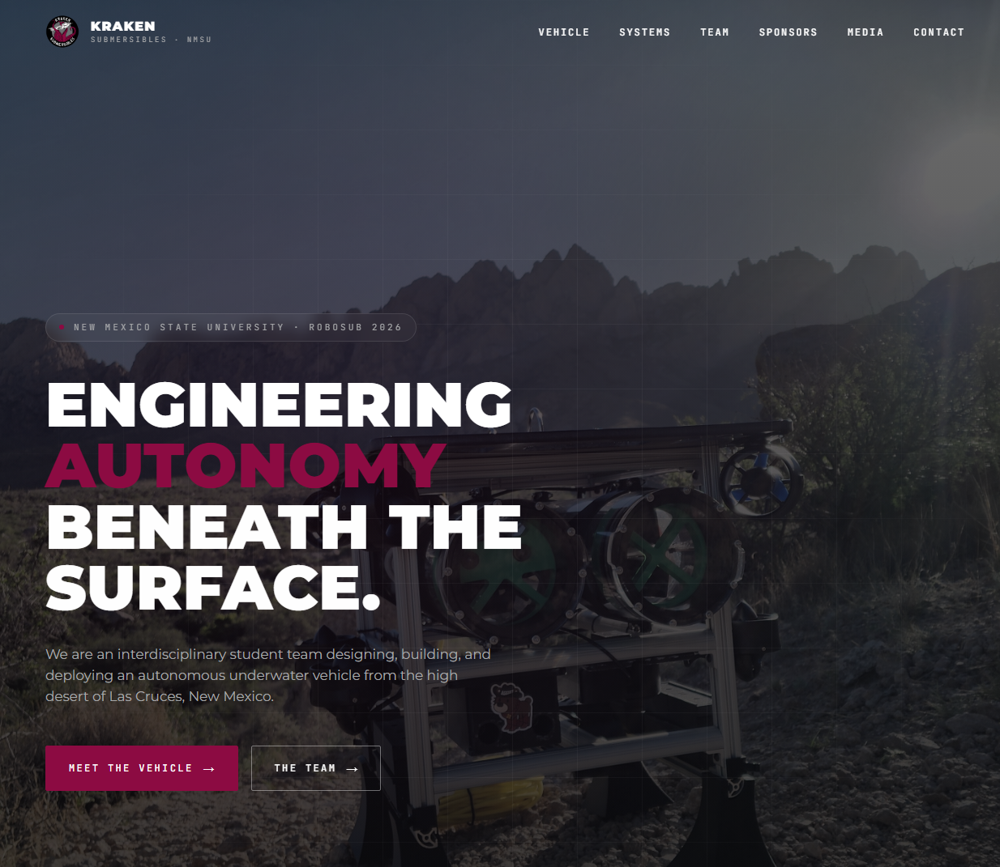
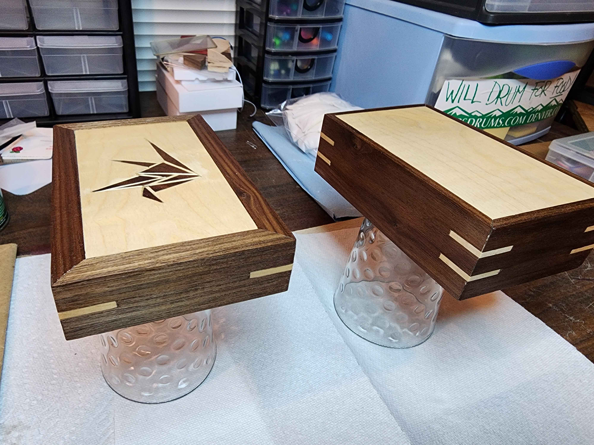
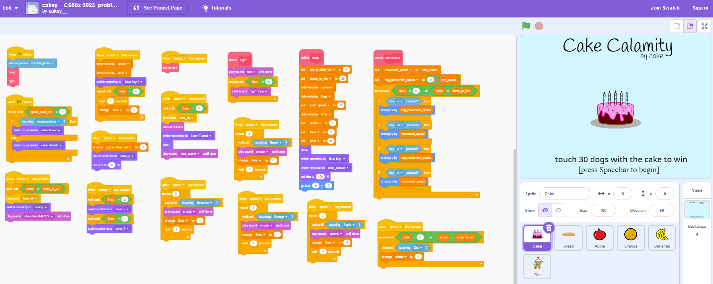
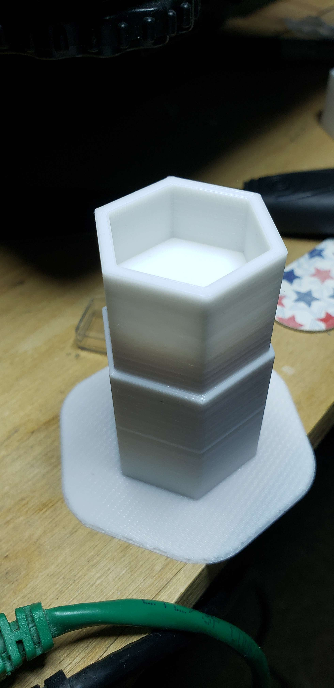
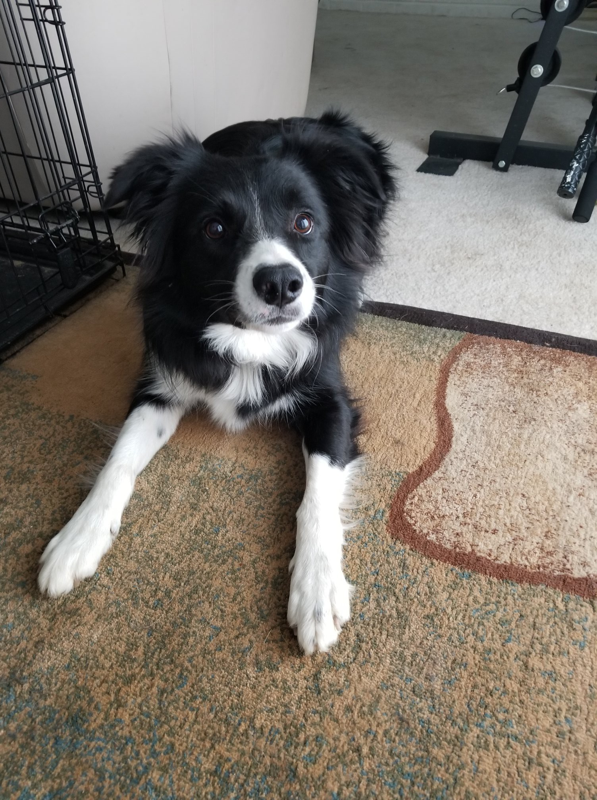
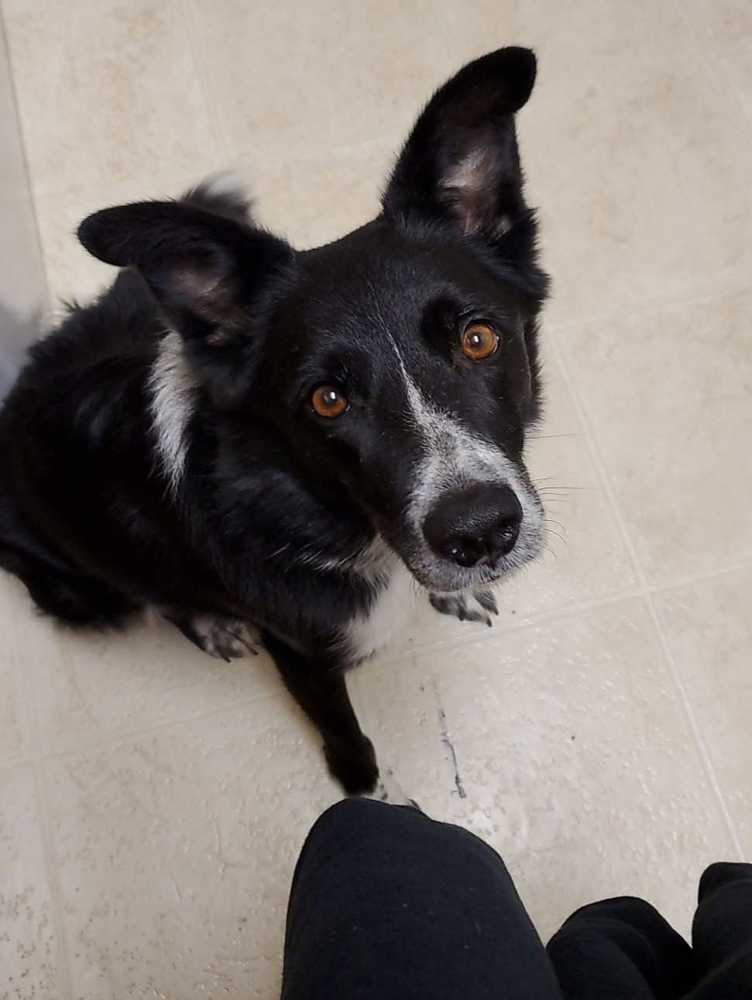

Lucas Samaniego - Resume Media
Google Docs Resume link.
Autonomous Underwater Vehicle (AUV)
Kraken Submersibles is New Mexico State University's first entry into RoboSub, an international autonomous underwater vehicle (AUV) competition. I served as Embedded Systems & Autonomy Lead on a 7-person team, starting from zero in September 2025 with no prior team history, no established budget, and no existing architecture to inherit. The team placed 33rd out of 58 teams overall. The team's website (which I built, linked below) scored 18th of 58 international teams on that portion of judging, and the vehicle qualified at competition.
GoPro underwater footage of the Nautilus AUV qualifying for Semi-Finals during the RoboSub2026 competition.
Early ROV test run at university pool verifying ROV capability before proceeding to autonomous function.
Qualifying run footage - testing at midnight in the hotel pool during the competition
AUV - 4-Channel Differential JFET Preamp + ADC PCB Design To Process Hydrophone Audio via I2S
Designed a custom board to process analog hydrophone data for Time Difference of Arrival (TDoA) onboard calculations by the AUV computer. Differential JFET Preamp & Filtering design inspired by here, adding safety functionality such as reverse polarity protections and various other design additions.
AUV - KiCad Schematics
KiCad schematics for the Differential JFET Preamp and ADC board, detailing the design of the motherboard and daughterboard and how the two connect.

AUV - System Architecture Diagrams
I developed the system architecture over the course of the project, mapping both data communication and power distribution across several iterations. These diagrams became the reference for assembly and modification, showing exactly how the AUV fits together.
AUV - Misc
Additional photos from the AUV build, covering component testing, integration, and the lab workspace.
AUV - Team Webpage
Created the Team Webpage for the NMSU Kraken Submersibles RoboSub 2026 team, which placed 18th out of 58 teams (full results).

Planned and edited the team introduction video.
Undergraduate Research Scholar (URS) - Open-Source Software Electronic Design Automation (EDA) Development
As an NM AMP Undergraduate Research Scholar working under Dr. Mario Renteria-Pinon, I stood up a complete open-source EDA workstation for RRAM and SRAM circuit design, simulation, layout, and verification, then tested whether that flow can replace commercial tools for ECE coursework and undergraduate research.
I determined the hardware the stack would need and specified the build: an Intel Xeon w7-3455 with 64 GB DDR5 ECC, an NVIDIA RTX 4000 Ada, and 2.5 TB of NVMe, running Red Hat Enterprise Linux 9.7. On that machine I installed xschem, ngspice, Magic, KLayout, netgen, Yosys, Icarus Verilog, and GTKWave, along with the SkyWater sky130A PDK and the Caravel user-project harness. Bit cells, sense amplifiers, and decoder-driven arrays were then captured and simulated end to end and compared against their Cadence Virtuoso equivalents.
The open-source stack covers the full loop used in NMSU's analog and mixed-signal coursework, from schematic capture through simulation, layout, and DRC/LVS to GDS. A one-time $4,200 workstation replaces recurring per-seat licensing, freeing roughly $100k per year of instructional budget, and the open PDK gives students a documented path to fabrication rather than a simulation-only exercise.
Rubik's Cube Simulation Project
Through the Electrical & Computer Engineering curriculum at NMSU, there is an Embedded Systems course (EE 112)
which features a final project in Arduino C++ which allows freedom of design to the
student as long as it implements the topics learned throughout the course. For my project, I created a
simulation of a Rubik’s Cube.
I wrote a program that utilizes an LCD Shield integrated with an Arduino Uno to display a Rubik’s cube
graphically in real time as it is being manipulated by moves entered through the Arduino GUI.
The Rubik’s cube is shown both in a dimetric perspective, as well as in an unfolded 2D representation on the LCD
screen.
There is also ASCII imagery representing the unfolded 2D map as output to the Serial monitor.
The simulation of the Rubik’s cube was achieved through the use of arrays corresponding to each of the
fifty-four spots which can be manipulated, but must always remain consistent with the behavior of a real-life
model.
(e.g. the center square of each face never changes, and there are always nine of each of the six colors)
The moveset, or possible turns of a cube, can be simplified to six types of turns, where every other type of
manipulation can be defined as a combination of those six turns. Those six turns are:
- Front - The closest third of the cube is turned ClockWise (CW)
- Right - The right third of the cube is turned CW
- Up - The top third of the cube is turned CW
- Left - The left third of the cube is turned CW
- Back - The back third of the cube is turned CW
- Down - The bottom third of the cube is turned CW
The above video is the demo showcasing my project that simulates a Rubik's Cube opn an Arduino Uno with a TFT LCD Shield. In the video, I send a series of inputs(turns) through the Arduino GUI, that manipulate the cube from a solved state to the pattern matching the physical cube on the webcam. The pattern gives the illusion of a cube inside of a cube inside of a cube, and I used it because it's my favorite pattern that can be made on a Rubik's cube. As the inputs are sent to the Arduino Uno, the LCD screen updates both the unfolded 2D and 3D dimetric map of the virtual cube.
github repository with Arduino C++ .ino file

Music Box
A music box designed and built as a gift, combining carpentry, inlay design, and a Raspberry Pi with a Pirate Audio shield to play music from inside a hand-finished Black Walnut enclosure.
Music Box - Box
Music Box - Board
The board is a Raspberry Pi 3B with an aftermarket Pirate Audio shield for DAC functionality and onboard playback controls. Playback is automated to start when the lid is opened, and the lid itself fits the dual stereo speakers exactly.
Music Box - Design
The lid carries a crane insignia inlay, with the negative space in Curly Maple against a Black Walnut crane for a striking contrast.
Music Box - carpentry complete

The finished enclosure after extensive sanding and a protective coating to treat and seal the wood.
Dencor - Project Manager
As the project manager for a small tech company working with Energy Management Systems (EMS), I facilitated several projects to completion, one of them being the installation of an EMS at the Kong Headquarters (a dog toy manufacturer), in Golden, CO. This project included:
- Planning: EMS system is custom configured to meet client needs, and assembled in our warehouse.
- Quoting: Based on the final configuration, I create a quote of time and materials and present it to the client.
- Install:
- Point-Of-Contact: I work closely with their building manager, and act as the point of contact, extending after installation
Scratch Self-Learning Exercise "Cake Calamity"
While on break from school, I continued to further my education and skills. I took part in Harvard's self-paced
CS50x Course. One of the modules in this course is
to program a game in Scratch, which was an excellent experience being exposed to using this programming
environment, and I especially hope more young students will have access to environments like this in the
future.
My game features rule-based behavior displayed in enemies that elevates the complexity-feel of what would
otherwise be a
very simple game experience. This self-paced course, as well as the eclectic collection of other projects in
this course,
helped me to strengthen my programming skills to compliment my ECE degree. Before this class and project, I
wasn't even aware
of Scratch, so this experience broadened my horizons.

link to playable game
Planet Labs UHF Antenna work
From January 2020 through to the end of 2024, I was an on-call UHF Technician for Planet Labs PBC, A San Francisco-based satellite imaging company. NMSU's now demolished Thomas & Brown building hosted one of their Ultra-High Frequency (UHF) ground stations. If any issues arose, I was called to troubleshoot the antenna, make repairs, or replace parts, while coordinating with a Ground Station Engineer at their HQ.
video showing the testing of full range of motion on an azimuth motor before physical replacement on the antenna

UHF Antenna after replacing azimuth/elevation motor, and performing calibration
3D Printing
Several years ago, I took a course which allowed me to become proficient in SolidWorks CAD as well as gain
experience with drafting 2D blueprints alongside 3D models. As a result, I
eventually acquired my own 3D printer, an Ender 3 v2. Since getting it in 2021, I have spent much of
my free time creating models in SolidWorks, SketchUp, and Autodesk CAD, and utilizing the combination of them as
a resource for both problem solving and entertainment purposes.
Much of my time was spent learning to work with OSS such as Cura Slicer to dial in a printer with both my own
personal models as well as models posted online to sites like Thingiverse.
The following is an example of a part I modeled and printed for a Biomedical lab that commissioned me for a
hex-wrench. The requirements were that it needed to be small enough to be operable within the crevices of
equipment, as well as designed in a way that would allow it to be sanitized to cleanroom standards.
3D printing log [incomplete].
Wrench 3D print


wrench modeled and printed for clean-room use. Made with SolidWorks
printed using Ender 3 v2 printer with PLA
Other
5k (3.1 mile) run log
I run with my dogs, border collies
Yuki Tempest Rain

and Hawaiian Riptide "Rip" Cloud
